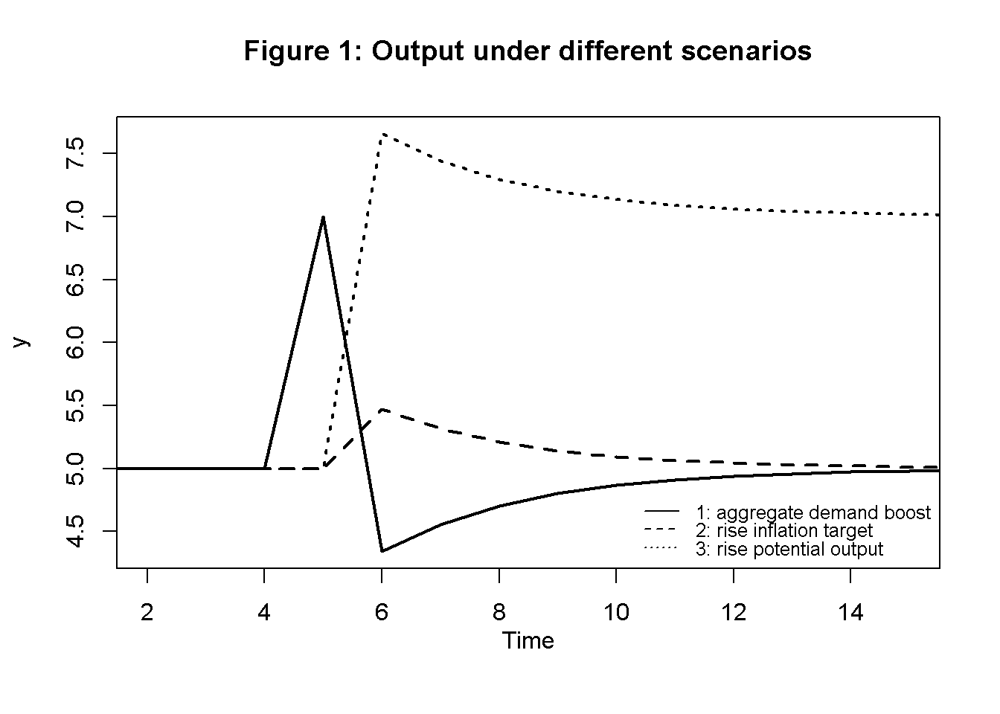
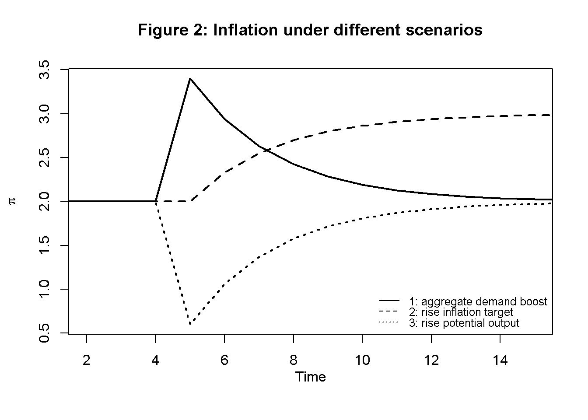
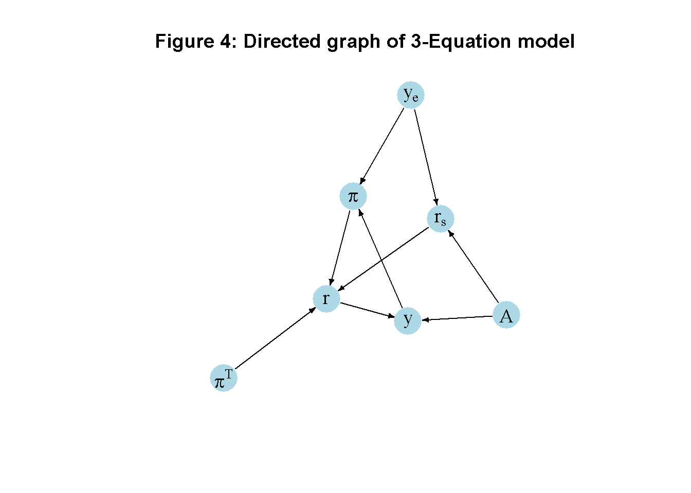

#Clear the environment
rm(list=ls(all=TRUE))
# Set number of periods
Q=50
# Set number of scenarios
S=3
# Set period in which shock/shift will occur
s=5
# Create (S x Q)-matrices that will contain the simulated data
y=matrix(data=0,nrow=S,ncol=Q) # Income/output
p=matrix(data=0,nrow=S,ncol=Q) # Inflation rate
r=matrix(data=0,nrow=S,ncol=Q) # Real interest rate
rs=matrix(data=0,nrow=S,ncol=Q) # Stabilising interest rate
# Set constant parameter values
a1=0.3 # Sensitivity of inflation with respect to output gap
a2=0.7 # Sensitivity of output with respect to interest rate
b=1 # Sensitivity of central bank to inflation gap
a3=(a1*(1/(b*a2) + a2))^(-1)
# Set parameter values for different scenarios
A=matrix(data=10,nrow=S,ncol=Q) # autonomous spending
pt=matrix(data=2,nrow=S,ncol=Q) # Inflation target
ye=matrix(data=5,nrow=S,ncol=Q) # Potential output
A[1,s:Q]=12 # scenario 1: AD boost
pt[2,s:Q]=3 # scenario 2: higher inflation target
ye[3,s:Q]=7 # scenario 3: higher potential output
# Initialise endogenous variables at equilibrium values
y[,1]=ye[,1]
p[,1]=pt[,1]
rs[,1]=(A[,1] - ye[,1])/a1
r[,1]=rs[,1]
# Simulate the model by looping over Q time periods for S different scenarios
for (i in 1:S){
for (t in 2:Q){
#(1) IS curve
y[i,t] = A[i,t] - a1*r[i,t-1]
#(2) Phillips Curve
p[i,t] = p[i,t-1] +a2*(y[i,t]-ye[i,t])
#(3) Stabilising interest rate
rs[i,t] = (A[i,t] - ye[i,t])/a1
#(4) Monetary policy rule, solved for r
r[i,t] = rs[i,t] + a3*(p[i,t]-pt[i,t])
} # close time loop
} # close scenarios loop10 A New Keynesian 3-Equation Model
Overview
New Keynesian dynamic general equilibrium models were developed in the 1990s and 2000s to guide monetary policy.1 They build on real business cycle models with rational expectations but introduce Keynesian frictions such as imperfect competition and nominal rigidities. While the structural forms of these models are typically complex as behavioural functions are derived from the intertemporal optimisation, the reduced-form of the benchmark models can be represented by three main equations: (i) an IS curve, (ii) a Phillips curve, (iii) and an interest rate rule.
The IS curve establishes a negative relationship between real income and the real interest rate. For a higher real interest rate, households will save more and thus consume less. The Phillips curve models inflation as a function of the output gap. A positive output gap (an economic expansion) leads to higher inflation. The monetary policy rule specifies how the central bank reacts to deviations of actual inflation from a politically determined inflation target.
The simplified version of the 3-equation model we consider here is directly taken from chapter 4 of Carlin and Soskice (2014). This is a short-run model in which prices are flexible but the capital stock is fixed. The focus is thus on goods market equilibrium rather than economic growth. In the Carlin-Soskice version, inflation expectations are assumed to be adaptive and the response of aggregate demand to a change in the interest rate is sluggish. This renders the model dynamic.2
The Model
\[ y_t=A -a_1r_{t-1} \tag{10.1}\]
\[ \pi_t=\pi_{t-1}+a_2(y_t -y_e) \tag{10.2}\]
\[ r_s=\frac{(A - y_e)}{a_1} \tag{10.3}\]
\[ r_t = r_s + a_3(\pi_t-\pi^T) \tag{10.4}\]
where \(y\), \(A\), \(r\), \(\pi\), \(y_e\), \(r_s\), and \(\pi^T\) are real output, autonomous demand (times the multiplier), the real interest rate, inflation, equilibrium output, the stabilising real interest rate, and the inflation target, respectively.
Equation 10.1 is the IS curve or goods market equilibrium condition. Aggregate output adjusts to the level of aggregate demand, which is given by autonomous demand (times the multiplier) and a component that is negatively related to the (lagged) real interest rate via households’ saving (\(a_1>0\)). Equation 10.2 is the Phillips curve. It is assumed that inflation is driven by adaptive expectations (\(E[\pi_{t+1}]=\pi_{t-1}\)) and positively related to the output gap \((y_t-y_e)\), i.e. \(a_2>0\). By Equation 10.3, the stabilising real interest rate is that real interest rate that is consistent with equilibrium output (\(y_e=A -a_1r_s\)). Finally, the interest rate rule in Equation 10.4 specifies the real interest rate the central bank needs to set to minimise its loss function (see Section 10.5 below for a derivation). The parameter \(a_3\) is a composite one given by \(a_3 = \frac{1}{a_1(\frac{1}{a_2 b} + a_2)} >0\). Although the central bank only sets the nominal interest rate \(i = r + E[\pi_{t+1}]\) directly, the fact that expected inflation is predetermined in every period allows it to indirectly control the real interest rate.
Simulation
Parameterisation
Table 1 reports the parameterisation used in the simulation. For all parameterisations, the system is initialised at the equilibrium \((y^*,\pi^*,r^*)=(y_e,\pi^T, r_s)\). Three scenarios will then be considered. In scenario 1, there is an increase in autonomous aggregate demand (\(A\)). In scenario 2, the central bank sets a higher inflation target (\(\pi^T\)). Scenario 3 considers a rise in equilibrium output (\(y_e\)).
Table 1: Parameterisation
| Scenario | \(a_1\) | \(a_2\) | \(b\) | \(A\) | \(\pi^T\) | \(y_e\) |
|---|---|---|---|---|---|---|
| 1: rise in aggregate demand (\(A\)) | 0.3 | 0.7 | 1 | 12 | 2 | 5 |
| 2: higher inflation target (\(\pi^T\)) | 0.3 | 0.7 | 1 | 10 | 2.5 | 5 |
| 3: rise in equilibrium output (\(y_e\)) | 0.3 | 0.7 | 1 | 10 | 2 | 7 |
Simulation code
Python code
import numpy as np
# Set number of periods
Q = 50
# Set number of scenarios
S = 3
# Set period in which shock/shift will occur
s = 5
# Create (S x Q) arrays to store simulated data
y = np.zeros((S, Q)) # Income/output
p = np.zeros((S, Q)) # Inflation rate
r = np.zeros((S, Q)) # Real interest rate
rs = np.zeros((S, Q)) # Stabilizing interest rate
# Set constant parameter values
a1 = 0.3 # Sensitivity of inflation with respect to output gap
a2 = 0.7 # Sensitivity of output with respect to interest rate
b = 1 # Sensitivity of the central bank to inflation gap
a3 = (a1 * (1 / (b * a2) + a2)) ** (-1)
# Set parameter values for different scenarios
A = np.full((S, Q), 10) # Autonomous spending
pt = np.full((S, Q), 2) # Inflation target
ye = np.full((S, Q), 5) # Potential output
A[0, s:Q] = 12 # Scenario 1: AD boost
pt[1, s:Q] = 3 # Scenario 2: Higher inflation target
ye[2, s:Q] = 7 # Scenario 3: Higher potential output
# Initialize endogenous variables at equilibrium values
y[:, 0] = ye[:, 0]
p[:, 0] = pt[:, 0]
rs[:, 0] = (A[:, 0] - ye[:, 0]) / a1
r[:, 0] = rs[:, 0]
# Simulate the model by looping over Q time periods for S different scenarios
for i in range(S):
for t in range(1, Q):
# (1) IS curve
y[i, t] = A[i, t] - a1 * r[i, t - 1]
# (2) Phillips Curve
p[i, t] = p[i, t - 1] + a2 * (y[i, t] - ye[i, t])
# (3) Stabilizing interest rate
rs[i, t] = (A[i, t] - ye[i, t]) / a1
# (4) Monetary policy rule, solved for r
r[i, t] = rs[i, t] + a3 * (p[i, t] - pt[i, t])Plots
Figures 1-3 depict the response of the model’s key endogenous variables to various shifts. A permanent rise in aggregate demand (scenario 1) has an instantaneous expansionary effect on output, but also pushes inflation above the target. This induces the central bank to raise the interest rate, which brings down output below equilibrium in the next period. The central bank then gradually lowers the policy rate towards its new higher equilibrium value, where inflation is again stabilised at its target level.
### Plot results
### Plots
# Set maximum period for plots
Tmax=15
# Output under different scenarios
plot(y[1, 1:(Tmax+1)],type="l", col=1, lwd=2, lty=1, xlab="", xlim=range(2:(Tmax)), ylab="y", ylim=range(y[1, 1:Tmax],y[3, 1:(Tmax)]))
title(main="Figure 1: Output under different scenarios", xlab = "Time",cex=0.8 ,line=2)
lines(y[2, 1:(Tmax+1)],lty=2, lwd=2)
lines(y[3, 1:(Tmax+1)],lty=3, lwd=2)
legend("topleft", legend=c("1: aggregate demand boost", "2: rise inflation target", "3: rise potential output"), lty=1:3, cex=0.8, bty = "n", y.intersp=0.8)
# Inflation under different scenarios
plot(p[1, 1:(Tmax+1)],type="l", col=1, lwd=2, lty=1, xlab="", xlim=range(2:(Tmax)), ylab=expression(pi), ylim=range(p[1, 2:Tmax],p[3, 2:(Tmax)]))
title(main="Figure 2: Inflation under different scenarios", xlab = "Time",cex=0.8 ,line=2)
lines(p[2, 1:(Tmax+1)],lty=2, lwd=2)
lines(p[3, 1:(Tmax+1)],lty=3, lwd=2)
legend("topleft", legend=c("1: aggregate demand boost", "2: rise inflation target", "3: rise potential output"), lty=1:3, cex=0.8, bty = "n", y.intersp=0.8)
# Policy rate under different scenarios
plot(r[1, 2:(Tmax+1)],type="l", col=1, lwd=2, lty=1, xlab="", xlim=range(1:(Tmax)), ylab="r", ylim=range(r[1, 2:Tmax],r[3, 2:(Tmax)]))
title(main="Figure 3: Policy rate under different scenarios", xlab = "Time",cex=0.8 ,line=2)
lines(r[2, 2:(Tmax+1)],lty=2, lwd=2)
lines(r[3, 2:(Tmax+1)],lty=3, lwd=2)
legend("topleft", legend=c("1: aggregate demand boost", "2: rise inflation target", "3: rise potential output"), lty=1:3, cex=0.8, bty = "n", y.intersp=0.8)
Python code
import matplotlib.pyplot as plt
# Set maximum period for plots
Tmax = 15
# Plot output under different scenarios
plt.figure(figsize=(8, 6))
plt.plot(y[0, :Tmax + 1], label="Scenario 1: aggregate demand boost",
color='k', linestyle='solid', linewidth=2)
plt.plot(y[1, :Tmax + 1], label="Scenario 2: Rise inflation target",
color='k', linestyle='dashed', linewidth=2)
plt.plot(y[2, :Tmax + 1], label="Scenario 3: Rise potential output",
color='k', linestyle='dotted', linewidth=2)
plt.title("Output under Different Scenarios")
plt.xlabel("Time")
plt.ylabel("y")
plt.xlim(1, Tmax)
plt.ylim(np.min(y), np.max(y))
plt.legend()
plt.show()An increase in the central bank’s inflation target (scenario 2) gradually raises the inflation rate to a new level. During the adjustment period, the interest rate falls, which temporarily allows for a higher level of output. However, there is no permanent expansionary effect.
By contrast, an increase in potential or equilibrium output (scenario 3) allows for a permanently higher level of output and a lower real interest rate.
Directed graph
Another perspective on the model’s properties is provided by its directed graph. A directed graph consists of a set of nodes that represent the variables of the model. Nodes are connected by directed edges. An edge directed from a node \(x_1\) to node \(x_2\) indicates a causal impact of \(x_1\) on \(x_2\).
# Construct auxiliary Jacobian matrix for 7 variables: y, p, r, A, ye, rs, pt
# where non-zero elements in regular Jacobian are set to 1 and zero elements are unchanged
M_mat=matrix(c(0,0,1,1,0,0,0,
1,0,0,0,1,0,0,
0,1,0,0,0,1,1,
0,0,0,0,0,0,0,
0,0,0,0,0,0,0,
0,0,0,1,1,0,0,
0,0,0,0,0,0,0),7,7, byrow=TRUE)
# Create adjacency matrix from transpose of auxiliary Jacobian and add column names
A_mat=t(M_mat)
# Create directed graph from adjacency matrix
library(igraph)Warning: package 'igraph' was built under R version 4.2.3dg=graph_from_adjacency_matrix(A_mat, mode="directed", weighted=NULL)
# Define node labels
V(dg)$name=c("y", expression(pi), "r", "A", expression(y[e]),expression(r[s]), expression(pi^T))
# Plot directed graph
plot(dg, main="Figure 4: Directed graph of 3-Equation model", vertex.size=20, vertex.color="lightblue",
vertex.label.color="black", edge.arrow.size=0.3, edge.width=1.1, edge.size=1.2,
edge.arrow.width=1.2, edge.color="black", vertex.label.cex=1.2,
vertex.frame.color="NA", margin=-0.08)
Python code
# Directed graph
import networkx as nx
import matplotlib.pyplot as plt
import numpy as np
# Define the Jacobian matrix
M_mat = np.array([[0, 0, 1, 1, 0, 0, 0],
[1, 0, 0, 0, 1, 0, 0],
[0, 1, 0, 0, 0, 1, 1],
[0, 0, 0, 0, 0, 0, 0],
[0, 0, 0, 0, 0, 0, 0],
[0, 0, 0, 1, 1, 0, 0],
[0, 0, 0, 0, 0, 0, 0],
])
# Create adjacency matrix from transpose of auxiliary Jacobian and add column names
A_mat = M_mat.transpose()
# Create the graph from the adjacency matrix
G = nx.DiGraph(A_mat)
# Define node labels
nodelabs = {
0: "y",
1: "π",
2: "r",
3: "A",
4: "yₑ",
5: "rₛ",
6: "πᵀ"
}
# Plot the directed graph
pos = nx.spring_layout(G, seed=43)
nx.draw(G, pos, with_labels=True, labels=nodelabs, node_size=300, node_color='lightblue',
font_size=10)
edge_labels = {(u, v): '' for u, v in G.edges}
nx.draw_networkx_edge_labels(G, pos, edge_labels=edge_labels, font_color='black')
plt.axis('off')
plt.show()In Figure 4, it can be seen that aggregate demand (\(A\)), equilibrium output (\(y_e\)), and the inflation target (\(\pi^T\)) are the key exogenous variables of the model. All other variables are endogenous and form a closed loop (or cycle) within the system. The upper-right side of the graph represents the supply side, given by the equilibrium level of output and its effect on inflation. The upper-left side captures the demand side and its effect on actual output. The key endogenous variables, output, inflation, and the interest rate form the centre of the graph, where they stand in a triangular relationship to each other. Output drives inflation, which in turn impacts the real interest rate. The latter then feeds back into output. Structural changes in the relationship between demand and supply (e.g. excess demand) also impact the system through their effect on the stabilising interest rate (\(r_s\)).
Analytical discussion
Derivation of core equations
IS curve
The IS curve in Equation 10.1 is loosely based on the consumption Euler equation introduced in Chapter 3. Suppose there are two periods and the household maximises its utility function \(U=\ln(C_t) + \beta \ln(C_{t+1})\) subject to the intertemporal budget constraint \(C_t+\frac{C_{t+1}}{1+r}=Y_t + \frac{Y_{t+1}}{1+r}\). Substituting the constraint into the objective function and differentiating with respect to \(C_t\) yields the first-order condition:
\[ C_t = \frac{C_{t+1}}{\beta(1+r)}. \]
This consumption Euler equation establishes the negative relationship between the real interest rate and expenditures in Equation 10.1.
PC curve
The Phillips curve Equation 10.2 is derived from wage- and price-setting in imperfect labour markets.3 Consider the following wage- and price-setting functions: \[ \frac{W}{P^E} = B + \alpha(y_t - y_e) + z_w \] \[ P=(1+\mu)\frac{W}{\lambda}, \tag{10.5}\]
i.e. the nominal wage \(W\), adjusted for the expected price level, is increasing in the output gap, a factor \(B\) capturing unemployment benefits and the disutility of work as well as a vector \(z_w\) of wage-push factors. Prices are set based on a constant mark-up (\(\mu\)) on unit labour cost (\(\frac{W}{\lambda}\)).
In equilibrium, the real wage is given by: \(w_e = B + z_w\). In a dynamic setting, wage setters will raise the expected real wage by \(\left(\frac{W_t}{P_{t}^E}\right) - \left(\frac{W_{t-1}}{P_{t-1}}\right)=\alpha(y_t - y_e)\). Together with adaptive expectations for prices \(\hat{P_t^E} = \hat{P}_{t-1}\) and the approximation \(\hat{W_t} - \hat{P_{t-1}} \approx \left(\frac{W_t}{P_{t}^E}\right) - \left(\frac{W_{t-1}}{P_{t-1}}\right)\), this yields the following equation for wage inflation: \[ \hat{W_t} = \hat{P}_{t-1} +\alpha(y_t - y_e). \tag{10.6}\]
Transforming equation Equation 10.5 into growth rates (\(\hat{P}=\hat{W}\)) and combining it with the wage-inflation equation Equation 10.6 yields the Phillips curve Equation 10.2.
Monetary policy rule
Finally, to derive the interest rate rule, start from the following central bank loss function:4
\[ L=(y_t-y_e)^2 + b(\pi_t - \pi^T)^2. \] Substituting the Phillips curve (Equation 10.2) into the loss function, differentiating with respect to \(y_t\), and simplifying yields the first-order condition:
\[ y_t-y_e = -a_2b(\pi-\pi^T), \]
which can also be regarded as a monetary policy rule. Next, substitute the Phillips curve (Equation 10.2), the IS-curve (Equation 10.1), and the stabilising interest rate (Equation 10.3) into the monetary policy rule and define \(a_3 = \frac{1}{a_1(\frac{1}{a_2b} + a_2)}\), which yields the interest rate rule (Equation 10.4).
Equilibrium solutions and stability analysis
By definition, in the steady state we have \(y^*=y_e\). This implies that \(r^*=r_s\). From this, it follows that \(\pi^* = \pi^T\).
To analyse the dynamic stability of the model, we rewrite it as a system of first-order difference equations. To this end, substitute Equation 10.1 into Equation 10.2, which yields: \[ \pi_t = \pi_{t-1} + a_2(A - a_1r_{t-1}-y_e) \tag{10.7}\]
Substitute this equation into Equation 10.4, which yields: \[ r_t= r_{s} + a_3[\pi_{t-1} + a_2(A - a_1r_{t-1}-y_e) - \pi^T]. \tag{10.8}\]
The Jacobian matrix of the system in Equation 10.1, Equation 10.7, and Equation 10.8 is given by: \[ J=\begin{bmatrix} 0& 0 &-a_1 \\0 & 1 & -a_1 a_2 \\ 0 & a_3 & -a_1 a_2 a_3 \end{bmatrix}. \] The eigenvalues of the Jacobian can be obtained from the characteristic polynomial \(\lambda^3 - Tr(J)\lambda^2 + [Det(J_1) + Det(J_2) + Det(J_3)]\lambda - Det(J) = 0\), where \(Tr(J)\) and \(Det(J\)) are the trace and determinant, respectively, and \(Det(J_i)\) refers to the \(i_{th}\) principal minor of the matrix. As there is a column in the Jacobian that only contains zeros, it follows that the matrix is singular and will have a zero determinant. In addition, all principal minors turn out to be zero. The characteristic polynomial thus reduces to \(\lambda^2[\lambda - Tr(J)]=0\). From this, it is immediate that \(\lambda_{1,2}=0\) and \(\lambda_{3}=Tr(J)\), where \(Tr(J)=1-a_1a_2a_3=\frac{1}{1+a_2^2b}\). Stability requires the single real eigenvalue to be smaller than unity (in absolute terms). With \(\lambda_3=\frac{1}{1+a_2^2b}\), stability thus only requires \(a_2 \neq 0\) and \(b>0\), i.e. the output gap needs to impact inflation (otherwise the key channel through which interest rate policy brings inflation back on target is blocked) and the central bank needs to assign a (non-negative) loss to deviations of actual inflation from its target.5
We can verify these analytical solutions by comparing them with the results from the numerical solution:
# Construct Jacobian matrix
J=matrix(c(0,0,-a1,
0,1,-a1*a2,
0,a3,-a1*a2*a3), 3, 3, byrow=TRUE)
# Obtain eigenvalues
ev=eigen(J)
(values <- ev$values)[1] 0.6711409 0.0000000 0.0000000# Obtain determinant and trace
det(J) # determinant[1] 0[1] 0.6711409
Python code
import numpy as np
# Construct Jacobian matrix
J = np.array([[0, 0, -a1],
[0, 1, -a1 * a2],
[0, a3, -a1 * a2 * a3],])
# Calculate eigenvalues
eigenvalues = np.linalg.eigvals(J)
# Print the resulting eigenvalues
print(eigenvalues)
# Calculate the determinant and trace of the Jacobian matrix
determinant = np.linalg.det(J)
trace = np.trace(J)
print(determinant)
print(trace)References
Carlin, Wendy, and David Soskice. 2014. Macroeconomics. Instititions, Instability, and the Financial System. Oxford University Press.
Galí, Jordi. 2018. “The State of New Keynesian Economics: A Partial Assessment.” Journal of Economic Perspectives 32 (3): 87–112. https://doi.org/10.1257/jep.32.3.87.
Note that this is quite different from conventional New Keynesian dynamic general equilibrium models in which the dynamic element stems from agents with rational expectations that react to serially correlated shocks.↩︎
As mentioned in footnote 2, this property of the Carlin-Soskice model is very different from conventional New Keynesian models with rational expectations. In these models, variables such as output and inflation are driven by the ‘forward-looking’ behaviour of rational agents, i.e. they depend on expectational terms for their current values rather than lagged values. To ensure what is called ‘determinancy’, these forward-looking variables must adjust fast (or ‘jump’) to bring the economy back onto a path that is consistent with the optimising equilibrium. This requires the number of jump variables to be matched by an equal number of unstable roots (i.e. being outside the unit circle).↩︎